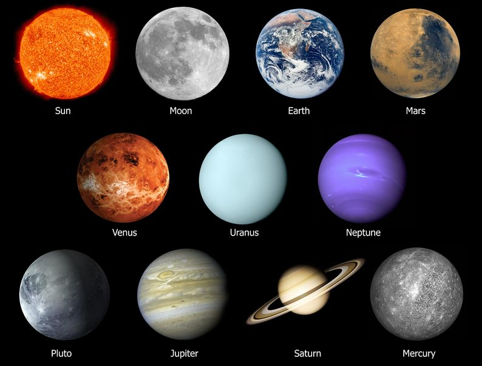

<html> vilket helt enkelt innebär att det som följer är just ett HTML-dokument.<html>-kroppen är taggen <head>. Inom denna del anges till exempel sidans titel, samt metadata.<body>. Allt inom denna del är det som visas på webbsidan eller påverkar hur det som visas ser ut eller beter sig.<body> markerar dokumentets kropp, alltså det som visuellt visas på webbsidan, så som text, hyperlänkar och listor.
<head> innehåller information om dokumentet som inte är direkt synligt i webbsidans kropp, så som sidans titel (<title>), stil (<style>)
<html> talar om för webbläsaren att dokumentet är ett HTML-dokument och därmed ska tolkas som ett sådant.
<title> markerar namnet på webbsidan vilket visas i dess verktygsfält. Det är också detta som blir namnet om webbsidan sparas som favorit samt visningsnamn vid sökning via sökmotor.
<meta>-taggar innehåller information om data i dokumentet, utan att datan syns i dokumentet. Istället är det information som är av vikt för exempelvis sökmotorer. Metainformation anges i dokumentets head-del.
<meta name="author" content="Förnamn Efternamn">. Attributet author talar om vilken typ av metadata som avses medan content är värdet som finns i metadatan.
<meta name="description" content="Basic HTML5 education">.
<meta name="generator" content="Frontpage 4.0">.
<name>-attributet.
<meta name="keywords" content="HTML, Webbprogrammering, HTML5, Taggar, Attribut">.
content="noindex" på övriga sidor. Ska länkar till andra sidor inte användas av spindeln används attributet content="nofollow"
<blockquote> markerar ett stycke som är citerat från en annan källa. Källan anges genom att skriva koden enligt följande exempel: <blockquote cite="http://www.w3schools.com/tags/tag_blockquote.asp">Citat</blockquote>
<div> definierar ett stycke i ett HTML-dokument som ska tilldelas en viss egenskap, till exempel en specifik färg på texten. Koden <div style="color:#00CC00">Grön text</div> ger till exempel resultatet: <h1> - <h6> används för att markera text som rubrik. <h1> avser huvudrubrik medan <h6> representerar den minst viktiga rubriknivån. Exempel på taggar skrivna med sina motsvarande rubriktaggar:
<p> markerar ett stycke i en text.
<pre> markerar ett fördefinierat textstycke, formaterat till ett teckensnitt med fast bred. Båda blanksteg och radbrytningar som skrivs inom taggen visas också i webbläsaren. Till exempel ger koden:
<pre>Blanksteg och radbrytningar tas i beaktande till skillnad från om de skrivs som vanlig text i koden</pre>Ger resultatet:
Blanksteg och radbrytningar tas i beaktande till skillnad från om de skrivs som vanlig text i koden
<span> markerar kan användas till att till exempel higlighta en del av en text genom att anropa färgkoden i taggen.
Exempel: Att skriva färgen röd med blå färg och vice versa är lite förvirrande.
<a>. Exempel: Koden <a href="http://www.hammarbyfotboll.se">Bajen</a> ger den absoluta länken Bajen
<a name="topp_ankare"></a> anges. Det är till denna taggs plats i dokumentet som ankarlänken sedan kommer peka. Länken som pekar mot ankaret skrivs
<a href="#topp_ankare">Till toppen av sidan</a>. Exempel:
Till toppen av sidan
<a href="http://www.hammarbyfotboll.se"><img src="hammarby_emblem.gif" alt="Hammarby IF Logotype" width="150" height="150"</a>.
mailto-attributet möjliggörs att skapa en länk som resulterar att e-postklienten öppnas med ett påbörjat mail där den i taggen angivna e-postadressen är inlagd som mottagare. Kodexempel: <a href="mailto:togu6504@student.su.se">Klicka här för att kontakta mig</a> resulterar i länken Klicka här för att kontakta mig
<ul> (Unordered List) definierar den oordnade listan. Varje element i listan initieras genom taggen <li> (LIst element). Exempel:
<ol> (Ordered List) definierar den ordnade listan. Varje element i listan initieras genom taggen <li>. Exempel:
<dt> och den infällda beskrivningen med <dd>. Koden kan se ut som följer: <dt>A</dt><dd>Alfabetets första bokstav</dd>. Exempel på resultat:
<caption> definierar tabellens rubrik. Placeras inom kroppen på <table>-taggen
<table> definierar tabellens kropp. Inom denna anger man villkoren för tabellen. Om ram önskas runt cellerna anger attributet border="1", annars ritas inte ramarna ut.
| Kolumnrubrik 1 | Kolumnrubrik 2 |
|---|---|
| Kolumntext 1 | Kolumntext 2 |
<td> (Table Data)representerar "vanlig" text i tabellcellerna. Placeras inom <tr>-kroppen
<th> (Table Heading)representerar rubriktext i tabellcellerna. Placeras inom <tr>-kroppen
<tr> (Table Row) representerar en rad i tabellen. Hur många objekt av <th> eller <td> som skapas inom varje <tr> avgör antalet kolumner på raden.
<img src="laptop.png">. Resultatet med denna kod blir:
Andra användsbara attribut är: alt="text" som ger en alternativ text på bildens plats om den inte skulle gå att visa.
<area> representerar de klickbara områden som ska innehålla bilder genom anrop med URL. Taggen <area> kan ha följande attribut:
shaperect ger rektangelcircle ger cirkelpolygon ger polygondefault representerar hela bilden, alltså vad som sker om man klickar inom kartan men utanför något av de andra områdena.coordshrefalt<map> representerar kartans struktur. Attributen name och id läggs in för att bilderna i kartan ska kunna referera till just den kartan.

I exemplet ovan är bilden av planeterna själva kartan (<map>) och ett område (<area>) över solen har gjorts klickbart med länkning till wikipedias sida om solen